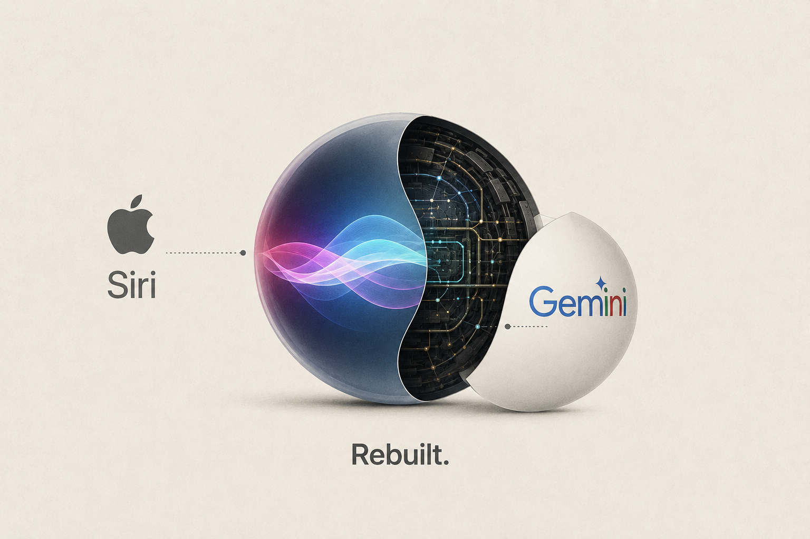

Apple Unveils a Fully Rebuilt Siri Powered by Google’s Gemini

Image Source: ChatGPT
Apple used WWDC 2026 on June 8 to unveil Siri AI, the most significant overhaul of its voice assistant in 15 years, rebuilt on a custom Google Gemini model. The announcement came after years of delayed features and a $250 million class action settlement over allegedly misleading advertisement of AI capabilities.
The new Siri is more capable, conversational, and compatible with visual intelligence features, and now lives in a dedicated standalone app. Key capabilities include multimodal input, multi-step commands across apps, and persistent conversation history synced via iCloud.
Apple evaluated models from Google, OpenAI, and Anthropic before selecting Gemini. The deal is reportedly worth approximately $1 billion per year. iOS 27 will also let users set a third-party model such as Claude or ChatGPT as their default assistant.
The rollout has geographic limits. Apple stated that for the time being Siri AI will not launch in the EU, due to regulatory limitations under the European Digital Markets Act (DMA). China faces the same restriction at launch.
Source (TechCrunch) →